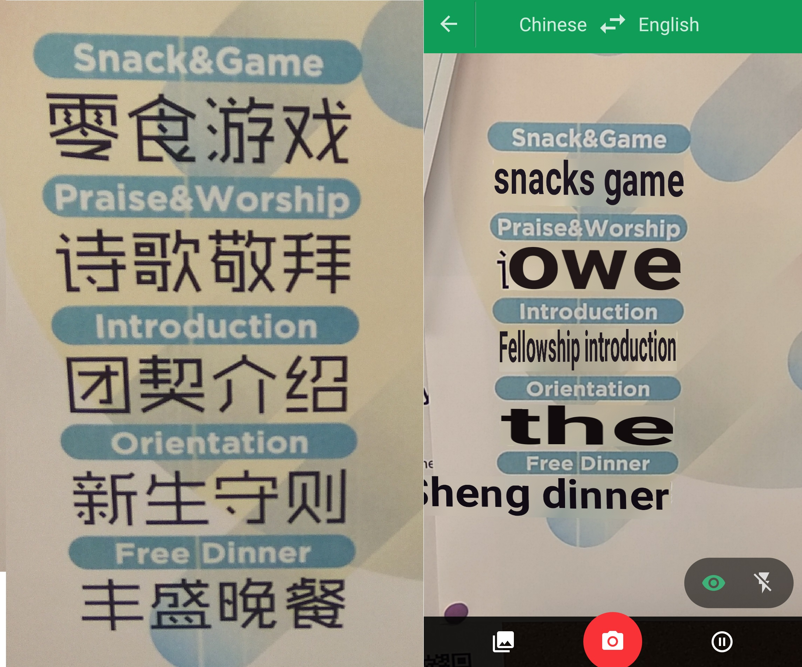

In today's world, where there are multiple cultures coexisting with each other, the biggest challenge for the technology and scientists is how to bring close each other. When televisions were invented, people were excited that they get to know about different countries and their colorful cultures in its full glory. Even to this day, travel and living programs are one of the most exciting thing on the television. These programs inspired many people to travel to exotic locations and experience everything in person.

Now imagine, you are in France sipping a expresso in a bistro. There's music in the background and right from where you are sitting, you can see the Eiffel Tower.You are full of energy and you think you can take over the world. You are living the dream aren't you?
After your breakfast, you do the thing every tourist does. You go to visit Louvre Museum. Its the world's largest art musuem and is one of the landmarks of the city. You would have never missed it. You go there and you admire the art created by the artists in last few centuries. Now you want to get the feel of the local culture. You want to meet the peple and learn about their lives and get to know what it feels to be a French citizen. Suddenly, the reality hits you. You realise you do not understand French. You cannot understand their language and probably most of them wont understand your language. It was all easy in the TV, there were voice overs in your language for each and every person. You dont have that kind of help
Probably someone at google must have thought "Wouldn't it be cool to create an application that can instantly translate any language to other language?" So, they started small with two languages and now the application supports more than 103 languages in span of 12 years. The app is available both on web and mobile phone application and boasts the following features:
Simply provide the text you want to be translated and the application will give its translation
In this feature, you nee to provie an image to the application. The image detects the text, translates it and show you the result. It also gets better with time as it asks user to check if it has selected the text correctly. The system uses this feedback to make itself better. With continous use, the application has become so good that it has started supporting realtime translations. Now the video feed of the camera is replaced by the translated text. This opens up the opportunities for many use cases. For example, if you want to read a book in another language, you only need to point your camera at the book and you get its instant translation right on your screen. In the image below, the left side is original text and on the right side the screenshot of translated text on the same page.

Apart from that if you are a tourist in a foreign country and you want to know the public signs, you can simple point your camera to the sign and you will be given the exact translation of what the sign says. So, consider the scenario that a French Gentleman has to go to restroom in United States. He doesn't know the language and sure doesn't want to go to ladies restroom, the application comes to his rescue. This can be evidenced in the image below. Also, notice how the app can figure out the font used and give the result in the same font.

Also, if you want to read the texts where there is a mixture of multiple languages. The application is able to pick up the given language from the image and only replaces the text of the language to be translated. For instance, the image given below showcases a pamphlet which contains text in English and Chinese. The application picks up the chinese text and translates it and then replaces the text with its English translation.
It can also be noted that in some cases the translation is not that perfect. But it gives a very good idea what the text in the image might be pointing towards.
{kind=link}
{kind=link}